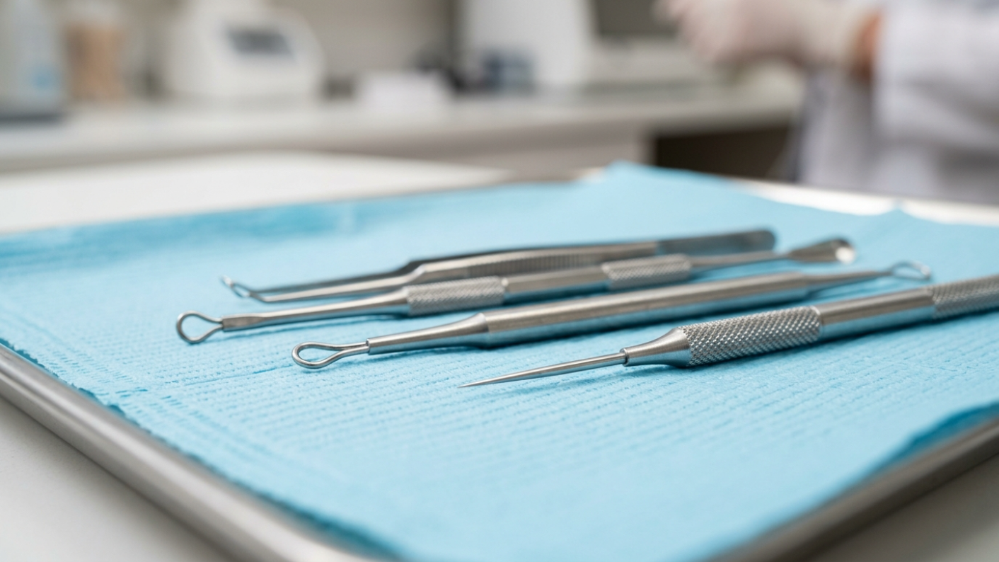
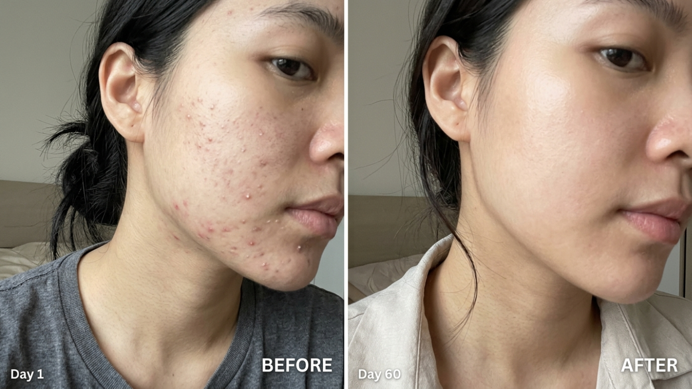

คลินิกกดสิวใกล้ฉัน ที่ดีกว่า ร้านกดสิวใกล้ฉัน — กัญวราคลินิก โดย หมอเหมี่ยว

ปัญหา สิวอุดตัน สิวหัวขาว สิวหัวดำ คือเรื่องน่าหงุดหงิดที่ทุกคนต้องเคยเจอ และเมื่อสิวเห่อขึ้นมาแบบไม่ทันตั้งตัว หลายคนก็มักรีบหยิบโทรศัพท์ขึ้นมาค้นหาคำว่า “ร้านกดสิวใกล้ฉัน” หรือ “กดสิวใกล้ฉัน”หรือ "คลินิกรักษาสิว ราคาไม่แพง ใกล้ฉัน" ทันที เพราะอยากให้ปัญหาหายไปโดยเร็วที่สุด แต่รู้หรือไม่ว่า การเลือก “คลินิกกดสิวใกล้ฉัน” ที่มีแพทย์ผิวหนังประจำดูแลโดยตรงนั้น ปลอดภัยและให้ผลลัพธ์ที่ดีกว่า “ร้านกดสิวใกล้ฉัน” ทั่วไปอย่างเห็นได้ชัด กัญวราคลินิก โดย พญ.กัญวรา นวอนุรักษ์ หรือที่คนไข้เรียกกันติดปากว่า “หมอเหมี่ยว” คือคลินิกรักษาสิวชื่อดังที่มีหมอรักษาสิวอันดับ 1 พร้อมดูแลทุกปัญหาสิวอย่างใส่ใจและตรงจุด
ทำไมต้องเลือก “คลินิกกดสิวใกล้ฉัน” แทน “ร้านกดสิวใกล้ฉัน”?
หลายคนเข้าใจว่าการกดสิวเป็นเรื่องเล็กที่ไหนก็ทำได้ แต่ความจริงแล้ว การกดสิวคือหัตถการทางการแพทย์ ที่ควรทำโดยผู้มีความรู้ด้านผิวหนังเท่านั้น เพราะหากกดสิวผิดวิธี อาจทำให้ผิวอักเสบ ติดเชื้อ และทิ้งร่องรอย หลุมสิว ที่รักษายากในระยะยาว ร้านกดสิวทั่วไปส่วนใหญ่ไม่ได้ใช้เครื่องมือปลอดเชื้อตามมาตรฐาน อาจกดสิวที่ยังไม่สุก หรือใช้แรงกดมากเกินไปจนหลอดเลือดฝอยใต้ผิวแตก เกิดเป็นรอยช้ำ รอยดำ และอาจกลายเป็นแผลเป็นในที่สุด
ในขณะที่ คลินิกกดสิวใกล้ฉัน ที่ได้มาตรฐานอย่างกัญวราคลินิก จะมี แพทย์ผู้เชี่ยวชาญด้านผิวหนัง ดูแลทุกขั้นตอน ตั้งแต่การประเมินว่าสิวเม็ดไหนสามารถกดได้ ใช้เครื่องมือปลอดเชื้อทางการแพทย์ และมีการดูแลผิวก่อนและหลังการกดสิวอย่างถูกวิธี เพื่อลดโอกาสเกิดรอย ลดการกลับมาเป็นสิวซ้ำ และให้ผิวกลับมาเรียบเนียนเร็วที่สุด

รู้จัก หมอเหมี่ยว พญ.กัญวรา นวอนุรักษ์ หมอรักษาสิวอันดับ 1
หัวใจสำคัญของ คลินิกกดสิวใกล้ฉัน ที่คุณจะวางใจได้ คือ “แพทย์” ที่ดูแลคุณ และที่กัญวราคลินิก คุณจะได้รับการดูแลโดย พญ.กัญวรา นวอนุรักษ์ หรือ “หมอเหมี่ยว” แพทย์ผู้มีประสบการณ์ดูแลปัญหาผิวพรรณและความงามมายาวนานกว่า 10 ปี โดยเฉพาะการรักษาสิวทุกประเภท ตั้งแต่สิวอุดตัน สิวอักเสบ สิวหัวช้าง ไปจนถึงรอยสิวและหลุมสิวที่ฝังลึก
หมอเหมี่ยวได้รับการยอมรับจากคนไข้จำนวนมากว่าเป็น หมอรักษาสิวอันดับ 1 ของย่านนี้ ด้วยฝีมือการกดสิวที่นุ่มนวล แม่นยำ ไม่ทิ้งรอย และความใส่ใจที่ทำให้คนไข้ทุกคนรู้สึกเหมือนเพื่อนสนิทมากกว่าผู้รับบริการทั่วไป ทำให้ กัญวราคลินิก ได้รับรีวิวเชิงบวกอย่างต่อเนื่อง และกลายเป็นคลินิกรักษาสิวชื่อดังที่หลายคนแนะนำต่อกันแบบปากต่อปาก
ขั้นตอนการกดสิวใกล้ฉันที่กัญวราคลินิก ปลอดภัย ถูกหลักการแพทย์
ที่กัญวราคลินิก เราให้ความสำคัญกับทุกขั้นตอนของการกดสิว เพราะเชื่อว่ารายละเอียดเล็ก ๆ คือสิ่งที่ทำให้ผลลัพธ์แตกต่างจาก ร้านกดสิวใกล้ฉัน ทั่วไปอย่างชัดเจน
- ปรึกษาและตรวจสภาพผิว: แพทย์จะวิเคราะห์ประเภทของสิว ความรุนแรง และสภาพผิวโดยรวม เพื่อวางแผนการกดสิวที่เหมาะกับคุณโดยเฉพาะ
- ทำความสะอาดผิวอย่างล้ำลึก: ด้วยน้ำยาสูตรอ่อนโยน ขจัดสิ่งสกปรกและน้ำมันส่วนเกินบนผิว เตรียมผิวให้พร้อมก่อนการกดสิว
- เปิดรูขุมขน: ใช้เทคนิคที่ช่วยให้สิวอุดตันหลุดออกง่าย ไม่ต้องใช้แรงกดมาก ลดโอกาสเกิดรอยช้ำหรือรอยดำหลังกดสิว
- กดสิวโดยแพทย์ผู้เชี่ยวชาญ: ใช้เครื่องมือปลอดเชื้อทางการแพทย์ กดเฉพาะสิวที่พร้อม ลดโอกาสการอักเสบและการติดเชื้อหลังหัตถการ
- ทรีตเมนต์ฟื้นฟูหลังกดสิว: ช่วยลดการอักเสบ ลดรอยแดง และบำรุงผิวให้กลับมาเรียบเนียนเร็วยิ่งขึ้น
- คำแนะนำการดูแลผิวที่บ้าน: แพทย์จะแนะนำการใช้สกินแคร์และการดูแลตัวเองที่ถูกต้อง เพื่อให้ผลลัพธ์อยู่ได้นานและไม่กลับมาเป็นสิวซ้ำ

เทคโนโลยีและทรีตเมนต์เสริม สำหรับคนที่ต้องกดสิวบ่อย
นอกจากการกดสิวด้วยมือแพทย์แล้ว กัญวราคลินิก ยังมีเทคโนโลยีและทรีตเมนต์เสริมที่ช่วยให้การรักษาสิวมีประสิทธิภาพสูงขึ้น และลดโอกาสที่คุณจะต้องค้นหา “กดสิวใกล้ฉัน” บ่อย ๆ ในอนาคต
- Cellec Acne Laser: เลเซอร์ที่ช่วยลดการอักเสบของสิว ลดรอยแดง และควบคุมการทำงานของต่อมไขมัน
- Healite II (LED Light Therapy): การฉายแสง LED ที่ช่วยฆ่าเชื้อแบคทีเรียในรูขุมขน ลดการอักเสบ และกระตุ้นการสร้างคอลลาเจนให้ผิวแข็งแรง
- Made Collagen: การฟื้นฟูผิวจากภายในด้วยสารสกัดธรรมชาติ ช่วยปรับสมดุลผิว ลดการเกิดสิวซ้ำซาก
- Acne Heal Program: โปรแกรมรักษาสิวครบวงจร ผสมผสานหลายเทคนิคให้เหมาะกับสภาพผิวของคุณ
การผสมผสานการ กดสิวใกล้ฉัน เข้ากับเทคโนโลยีเหล่านี้ จะช่วยให้ปัญหาสิวลดลงอย่างเห็นได้ชัด และผิวกลับมาดูเรียบเนียน กระจ่างใส ในระยะเวลาที่เหมาะสม โดยไม่ต้องเสี่ยงกับการเป็นสิวเรื้อรัง

ทำไมกัญวราคลินิก คือ คลินิกกดสิวใกล้ฉัน ที่คุณควรเลือก?
หากคุณกำลังค้นหา คลินิกกดสิวใกล้ฉัน ในย่าน มีนบุรี คลองสามวา รามอินทรา หทัยราษฎร์ สายไหม นวมินทร์ บางชัน หรือพื้นที่ใกล้เคียง กัญวราคลินิก คือคำตอบที่คุ้มค่าที่สุดสำหรับคุณ เพราะเรามอบสิ่งเหล่านี้ให้กับคนไข้ทุกคน
- ดูแลโดยแพทย์ผิวหนังโดยตรง: ทุกหัตถการอยู่ใต้การดูแลของ หมอเหมี่ยว ไม่ใช่แค่พนักงานทั่วไป
- เครื่องมือปลอดเชื้อทางการแพทย์: ทุกชิ้นผ่านการฆ่าเชื้อตามมาตรฐานคลินิกเวชกรรม
- ราคาเอื้อมถึง: มีโปรแกรมหลายระดับ ไม่ยัดเยียดคอร์สที่ไม่จำเป็น
- บริการอบอุ่น เป็นกันเอง: รู้สึกสบายใจตั้งแต่ก้าวแรกที่เข้ามาในคลินิก
- ผลลัพธ์จริง รีวิวจริง: จากคนไข้จำนวนมากที่ไว้วางใจให้เราดูแล
ปัญหาสิวไม่ใช่เรื่องเล็กหากปล่อยไว้นาน เพราะอาจกลายเป็นแผลเป็นและหลุมสิวที่รักษายากในอนาคต ดังนั้น แทนที่จะเสี่ยงกับ “ร้านกดสิวใกล้ฉัน” ที่ไม่มีหมอประจำ การเลือก “คลินิกกดสิวใกล้ฉัน” ที่ดูแลโดย หมอเหมี่ยว พญ.กัญวรา นวอนุรักษ์ คือทางเลือกที่ดีต่อผิวของคุณในระยะยาว

พร้อมบอกลาสิวอุดตันแบบหายขาดแล้วหรือยัง?
อย่าปล่อยให้สิวบั่นทอนความมั่นใจของคุณอีกต่อไป เลือก คลินิกกดสิวใกล้ฉัน ที่ดูแลโดย หมอเหมี่ยว พญ.กัญวรา นวอนุรักษ์ คลินิกรักษาสิวชื่อดัง ที่มีหมอรักษาสิวอันดับ 1 ติดต่อนัดหมายปรึกษาคุณหมอได้แล้ววันนี้
โทรนัดหมาย: 091-795-4884